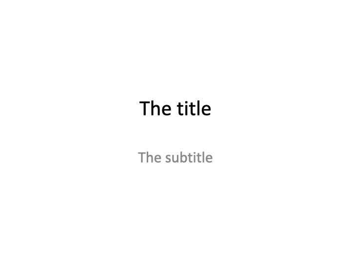

I’m excited to have the r2pptx package
on CRAN! r2pptx is an easy way to use R to make Powerpoint presentations. It
can be helpful if you often create slide decks that contain tables,
plots, or calculations from R code.
r2pptx is a wrapper around
officer. It wouldn’t be possible
without officer developer David Gohel’s hard work. Thanks David!
In this post I’ll go through how to make basic and advanced presentations using r2pptx.
Installation
First, you’ll need to install r2pptx. You can do so with
install.packages("r2pptx")
# or you can install the development version from github
# remotes::install_github("mattle24utils/r2pptx")
We’ll also load the ggplot2, dplyr, and flextable packages for this example. You don’t need any of these to use r2pptx, but you may find them useful.
# install.packages(c("dplyr", "ggplot2", "flextable"))
library(ggplot2)
library(dplyr)
library(flextable)
library(r2pptx)
Simple example
First we need to choose a PowerPoint template. This is a normal .pptx file
that has the template we want in Slide Master. By default, r2pptx uses the
default template in officer. This seems like a slight variation on the
default Microsoft PowerPoint template.
Let’s start by creating a presentation.
presentation <- new_presentation()
print(presentation)
## Presentation with 0 slides.
print(template_path(presentation))
## [1] "/Library/Frameworks/R.framework/Versions/4.1-arm64/Resources/library/officer/template/template.pptx"
We can see this is an empty presentation with the template path set to the default
officer template. What’s in this template? We can check using some utility functions.
get_layouts(presentation)
## layout master
## 1 Title Slide Office Theme
## 2 Title and Content Office Theme
## 3 Section Header Office Theme
## 4 Two Content Office Theme
## 5 Comparison Office Theme
## 6 Title Only Office Theme
## 7 Blank Office Theme
This template has seven different layouts. That’s good to know, but we still don’t
know which layout to use for which purpose. Let’s keep going!
layouts <- get_layouts(presentation)$layout
for (layout in layouts) {
plot_layout(presentation, layout)
title(main = layout)
}


Now we can see for each slide layout what options we have to use as placeholders! Knowing this, we can move forward and start constructing our presentation!
In r2pptx syntax, presentations consist of slides which consist of elements. elements represent anything we want to add to the deck. This could be text, plots, images, tables, etc. Anything compatible with the officer package works here!
We start out making a title slide with a title and subtitle. We give elements for
the title and subtitle as arguments to the new_slide() function. And we give “Title Slide”
as the layout name, per the information from above.
title_slide <- new_slide(
layout = "Title Slide",
elements = list(
new_element(key = "Title 1", value = "The title"),
new_element(key = "Subtitle 2", value = "The subtitle")
)
)
print(title_slide)
## Slide with layout `Title Slide` and 2 elements:
## - character
## - character
elements have two arguments. The key tells R where to place the element. Currently,
this only supports a placeholder label. Placeholders are the objects in a PowerPoint slide layout (as seen above). Placeholder labels are the name of placeholders. Future development may allow other location specifications, such as giving x and y positions.
Now we add the title slide to our presentation.
presentation <- presentation + title_slide
print(presentation)
## Presentation with 1 slides.
Easy!
Let’s add another slide with a ggplot. This time, we’ll add the elements to the slide
rather than initializing the slide with elements.
# create the slide object
plot_slide <- new_slide(layout = "Title and Content")
print(plot_slide)
## Slide with layout `Title and Content` and 0 elements:
## -
# create an element for the title element
title_element <- new_element(key = "Title 1", value = "A plot")
# create a ggplot
cars_plot <- ggplot(mtcars, aes(x = mpg, y = cyl)) +
geom_point()
# create an element for the plot
plot_element <- new_element(key = "Content Placeholder 2", value = cars_plot)
plot_slide <- plot_slide +
title_element +
plot_element
print(plot_slide)
## Slide with layout `Title and Content` and 2 elements:
## - character
## - gg
presentation <- presentation +
plot_slide
print(presentation)
## Presentation with 2 slides.
And then we can write the presentation to PowerPoint.
ppt_path <- tempfile(fileext = ".pptx")
write_pptx(presentation, ppt_path)
if (interactive()) system(paste("open", ppt_path))
And you have a slide deck! Congrats! The deck should look like:


Advanced example
In a more advanced example, we may want to produce many similar slides.
For example, we’ll use a dataset which has metrics on US Senators. In this example,
we’d like to make a presentation that has one slide per state. Each state’s slide
will have the same layout, but data specific to the given state.
G. Elliott Morris has an R package called
politicaldata which we will use to get DW Nominate scores for US Senators. DW
Nominate is an academic project that calculates a
score for each senator ranging from -1 to 1. A score of -1 indicates the senator
is very far to the left, and a score of 1 indicates the senator is very far to
the right. A score of 0 indicates the senator is in the middle of the left /
right spectrum. There is more nuance, but we will ignore that in this example.
Let’s install the politicaldata package, which contains the data we’ll use.
remotes::install_github("elliottmorris/politicaldata")
And now we load the data into our R session.
senate_dw_df <- politicaldata::get_senate_nominate()
# first congress met in 1789, new congress every two years after that
senate_dw_df$year <- ((senate_dw_df$congress - 1) * 2) + 1789
We get a list of states to iterate over.
states <- sort(unique(senate_dw_df$state_abbrev))
# helpers to go from state abbreviation to state name
state_bridge <- data.frame(
state_abbrev = state.abb,
state_name = state.name
)
state_abbrev_to_name <- function(x) {
state_bridge %>%
dplyr::inner_join(data.frame(state_abbrev = x), by = "state_abbrev") %>%
dplyr::pull(state_name)
}
I’m making some helper functions to deal with color scales – this is not important
to understand.
.transform_0_1 <- function(x, low_pt, high_pt) {
(x - low_pt) / (high_pt - low_pt)
}
# takes in a DW nomiate value and returns a color. values between 0 and 1 will
# be on a white -> red color scale. values between -1 and 0 will be on a blue ->
# white color scale
color_scale_fn <- function(x) {
pos_vals <- .transform_0_1(x, 0, 1)
neg_vals <- .transform_0_1(x, -1, 0)
pos_colors <- scales::seq_gradient_pal(low = "white", high = "red")(pos_vals)
neg_colors <- scales::seq_gradient_pal(low = "blue", high = "white")(neg_vals)
res <- pos_colors
res[x < 0] <- neg_colors[x < 0]
res
}
Now we can loop through each state to make 50 slides. For each state, we’ll make
one slide. The slide will have a plot showing how the state’s Senators’ DW
Nominate scores have changed over time and a table showing the scores for recent
Senators.
# make a slidelist - a new class of object that is a helpful way to hold slides
# that aren't part of a presentation yet
slide_list <- new_slidelist()
for (state in states) {
state_senate_dw_df <- senate_dw_df %>%
dplyr::filter(state_abbrev == !!state)
# make the table
dw_recent_table <- state_senate_dw_df %>%
dplyr::filter(state_abbrev == !!state) %>%
dplyr::arrange(-year) %>%
dplyr::slice(1:10) %>%
dplyr::select(year, bioname, nominate_dim1) %>%
flextable() %>%
set_formatter(year = as.character) %>%
bg(j = 3, bg = color_scale_fn) %>%
set_header_labels(
year = "Year",
bioname = "Name",
nominate_dim1 = "DW Nominate (1)"
) %>%
# placeholder 2 width is 4.416667
width(j = 2, width = 2.5) %>%
width(j = 3, width = 1) %>%
width(j = 1, width = 4.416667 - 1 - 2.5)
# make the time series plot
dw_time_series_plot <-
ggplot(state_senate_dw_df, aes(x = year, y = nominate_dim1, fill = nominate_dim1)) +
geom_hline(yintercept = 0, linetype = "dashed") +
geom_smooth(method = "loess", formula = y ~ x, color = "gray45") +
geom_point(pch = 21) +
scale_fill_gradient2(low = "blue", high = "red", guide = "none") +
theme_minimal() +
labs(x = "Year", y = "DW Nominate (Dim1)")
# make the slide
state_slide <- new_slide(
layout = "Two Content",
elements = list(
new_element("Title 1", state_abbrev_to_name(state)),
new_element("Content Placeholder 2", dw_time_series_plot),
new_element("Content Placeholder 3", dw_recent_table)
)
)
# add the slide to the slidelist
slide_list <- slide_list + state_slide
}
# and now make a presentation and add the slidelist (containing all the slides)
# to the presentation
presentation <- new_presentation() + slide_list
Last, we write the presentation as a PowerPoint file and open it!
ppt_path <- tempfile(fileext = ".pptx")
write_pptx(presentation, ppt_path)
if (interactive()) system(paste("open", ppt_path))
The first few slides should look like:


I hope this has shown the power and flexability of r2pptx! You can find more
documentation at the package’s website, linked here.